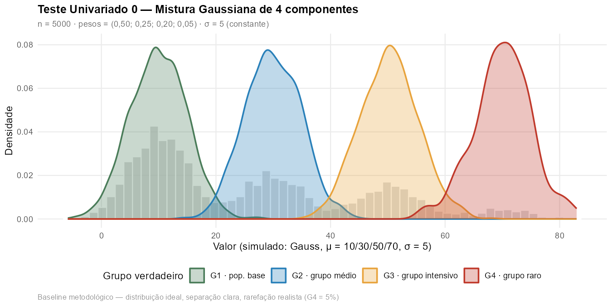
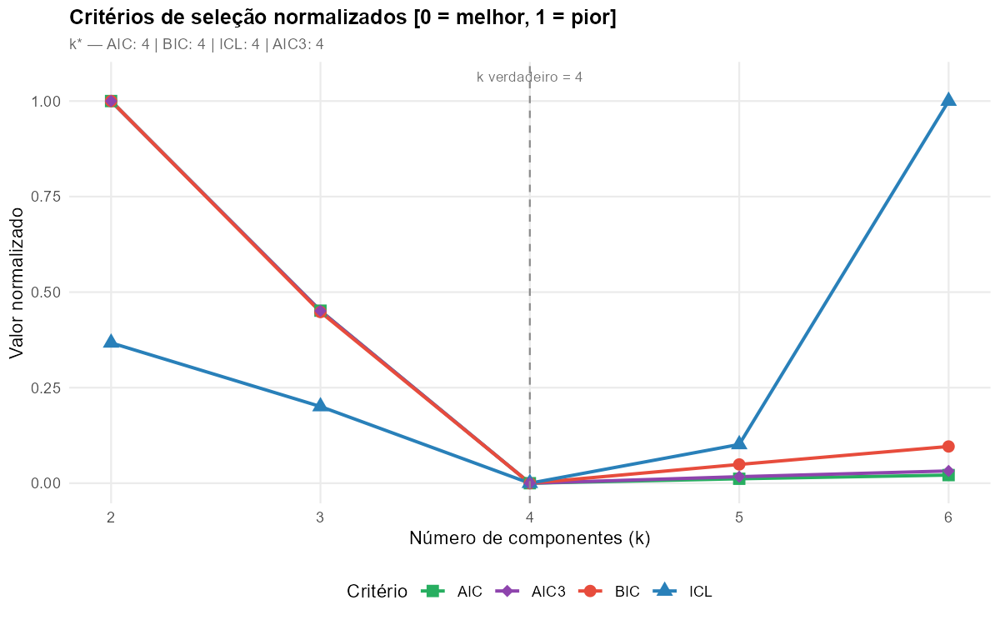
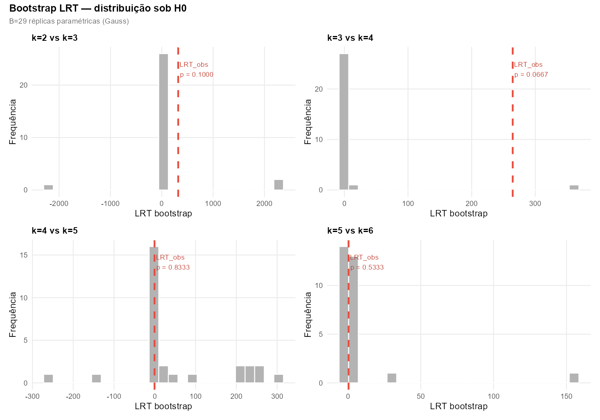
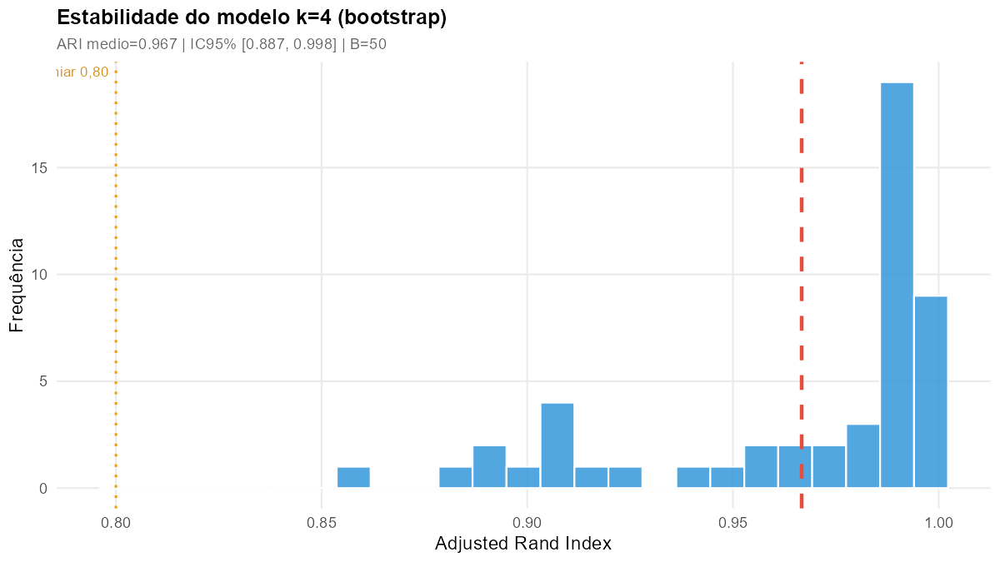
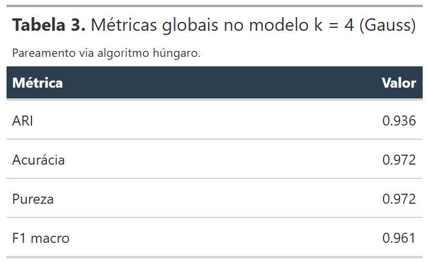
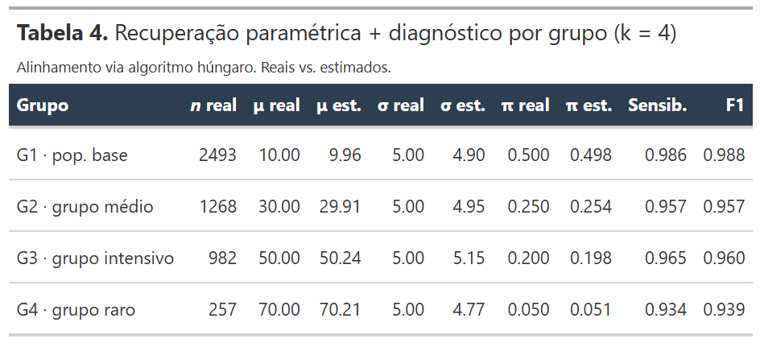
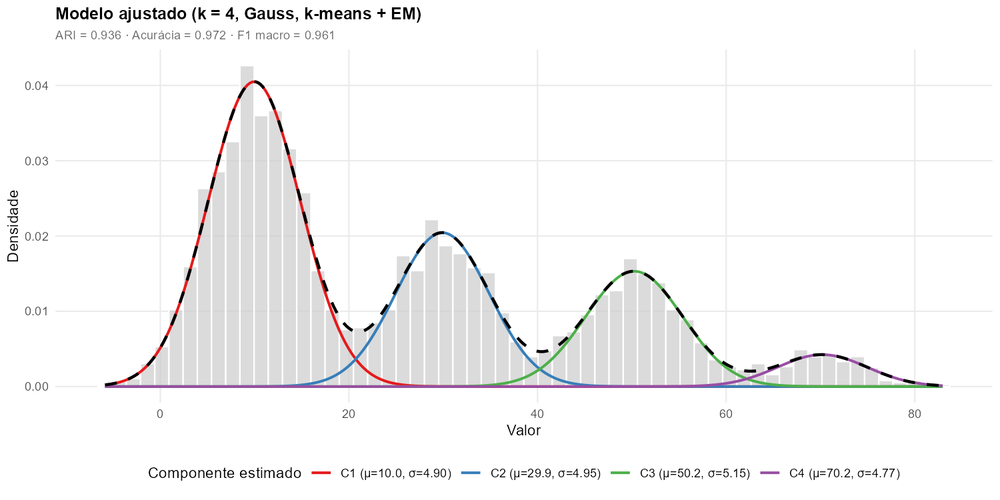
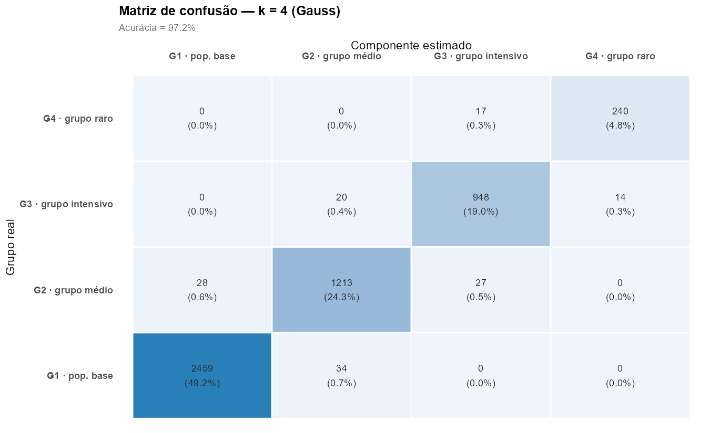

Teste Univariado 0
Baseline metodológico — mistura Gaussiana univariada com médias
bem espaçadas, pesos desbalanceados como nos dados reais
(50/25/20/5) e sobreposição leve (σ = 5), avaliada por
AIC, BIC, ICL, AIC3 e Bootstrap LRT via
flexmix
Teste de controle da série univariada. Configura uma situação próxima do ideal — distribuição Normal, médias bem espaçadas, sobreposição leve — porém com a mesma estrutura de pesos da simulação calibrada do projeto (G4 raro, 5 %). O propósito é demonstrar empiricamente que a metodologia recupera os quatro grupos quando seus pressupostos são respeitados, e que nem a rarefação de um grupo nem sobreposição leve são suficientes, isoladamente, para comprometer a recuperação. Isso permite, por exclusão, identificar a combinação responsável pelo fracasso do Teste Univariado 2.
Pergunta investigada: sob distribuição Gaussiana com médias bem espaçadas (μ = 10, 30, 50, 70), σ constante = 5 e pesos desbalanceados \(\pi = (0{,}50;\ 0{,}25;\ 0{,}20;\ 0{,}05)\), os cinco critérios — AIC, BIC, ICL, AIC3 e Bootstrap LRT — recuperam corretamente os quatro grupos verdadeiros? O grupo raro G4 (5 % da população) é classificado com sensibilidade aceitável?
1 · Motivação e posicionamento na série
A série de testes univariados foi construída como um experimento pedagógico em três degraus, mapeando como cada característica dos dados reais de saúde afasta a recuperação da estrutura latente da situação ideal:
| Teste | Distribuição | Pesos | Sobreposição | Resultado esperado |
|---|---|---|---|---|
| Teste 0 (este) | Gauss σ = 5 | real (50/25/20/5) | leve | Recupera g = 4 |
| Teste 1 | NB(θ = 2,5) | balanceado | moderada | BLRT recupera g = 4 |
| Teste 2 | NB(θ livre) | real | forte (calibrado ANS) | Todos os critérios falham (g* = 2) |
Cada degrau introduz um elemento de realismo, mantendo os demais controlados. O presente Teste 0 fixa as características ideais sobre a distribuição (Gauss) e a separação (médias espaçadas, σ moderado), mas adota a estrutura realista de pesos (G4 com apenas 5 % da população).
2 · Desenho do experimento
| Parâmetro | Configuração |
|---|---|
| \(n\) | 5.000 observações |
| Distribuição | Mistura Gaussiana, \(f(x \mid \Theta) = \sum_{k=1}^{g} \pi_k \cdot \mathcal{N}(x \mid \mu_k, \sigma_k^2)\) |
| Médias verdadeiras | \(\boldsymbol{\mu} = (10,\ 30,\ 50,\ 70)\) — separação uniforme de 20 unidades |
| Desvios-padrão | \(\sigma = 5\) constante — separação padronizada de 4σ entre vizinhos |
| Pesos verdadeiros | \(\boldsymbol{\pi} = (0{,}50;\ 0{,}25;\ 0{,}20;\ 0{,}05)\) — mesma estrutura da simulação calibrada |
| Modelo de estimação | flexmix(valor ~ 1, k = g) — default Gaussiano |
| Inicialização | k-means + EM (uma execução) |
| Cardinalidades testadas | \(g \in \{2, 3, 4, 5, 6\}\) |
| Critérios | AIC, BIC, ICL, AIC3 e Bootstrap LRT (B = 29) |
| Estabilidade | Bootstrap não-paramétrico via ARI (B = 50) |
| Implementação | Script src/03_analises/06_teste_univariado_0.R |
3 · Dados simulados
| Grupo | μ | σ | π | n esperado |
|---|---|---|---|---|
| G1 · população base | 10 | 5 | 0,50 | 2.500 |
| G2 · grupo médio | 30 | 5 | 0,25 | 1.250 |
| G3 · grupo intensivo | 50 | 5 | 0,20 | 1.000 |
| G4 · grupo raro | 70 | 5 | 0,05 | 250 |

Figura 1. Distribuição empírica dos quatro grupos Gaussianos simulados. Cada componente é claramente separado dos vizinhos (distância de 4σ); G4 (grupo raro, n ≈ 250) é visualmente reconhecível na extremidade direita apesar do baixo peso. O histograma global (em cinza) é a soma ponderada das quatro densidades.
4 · Resultados — Módulo A · Critérios penalizados
Para cada \(g \in \{2,\ldots,6\}\), ajusta-se um modelo Gaussiano com k-means + EM e calculam-se AIC, BIC, ICL e AIC3.

Figura 2. Critérios AIC, BIC, ICL e AIC3 normalizados [0 = melhor, 1 = pior] em função do número de componentes \(g\). Linha tracejada: \(g\) verdadeiro = 4. Os quatro critérios concordam em \(g^* = 4\), com mínimo nítido — em contraste direto com o Teste 2, onde a curva é plana e todos selecionam \(g = 2\).
| g | log-Lik | np | AIC | BIC | ICL | AIC3 |
|---|---|---|---|---|---|---|
| 2 | −20.835,3 | 5 | 41.680,6 | 41.713,2 | — | 41.685,6 |
| 3 | −20.675,3 | 8 | 41.366,6 | 41.418,7 | — | 41.374,6 |
| 4 | −20.543,0 | 11 | 41.108,0 | 41.179,7 | mín. | 41.119,0 |
| 5 | −20.543,3 | 14 | 41.114,6 | 41.205,9 | — | 41.128,6 |
| 6 | −20.543,1 | 17 | 41.120,2 | 41.231,0 | — | 41.137,2 |
5 · Resultados — Módulo B · Bootstrap LRT
O Bootstrap LRT (McLachlan, 1987) opera por reamostragem paramétrica sob \(H_0\) — método de referência para seleção de \(g\) em misturas quando as condições de regularidade do χ² assintótico não se sustentam.

Figura 3. Distribuições bootstrap da estatística LRT sob \(H_0\) para cada par sequencial \((g,\ g+1)\). Os LRTs observados em \(g = 2 \to 3\) (LRT = 320) e \(g = 3 \to 4\) (LRT = 265) são substanciais, mas a distribuição nula apresenta caudas longas com observações esparsas tão extremas quanto o observado, resultando em p-valores borderline (0,10 e 0,067).
| g | g+1 | LRT observado | p-valor | B válidos | Rejeita H₀? |
|---|---|---|---|---|---|
| 2 | 3 | 320,1 | 0,100 | 29 | Não (borderline) |
| 3 | 4 | 264,5 | 0,067 | 29 | Não (borderline) |
| 4 | 5 | −0,7 | 0,833 | 29 | Não |
| 5 | 6 | 0,5 | 0,533 | 29 | Não |
6 · Resultados — Módulo C · Estabilidade

Figura 4. Distribuição bootstrap do Adjusted Rand Index entre a partição original (\(g = 4\)) e as partições obtidas em 50 reamostragens. ARI médio = 0,967; IC 95% = [0,887; 0,998]. A estrutura é robustamente reproduzida sob reamostragem, em contraste direto com o Teste 2 (ARI = 0,649; IC95% [0,000; 1,000]) — sinal claro de que a partição em \(g = 4\) é estável.
7 · Resultados — Módulo D · Avaliação em k = 4

Tabela 3. Métricas globais de classificação em \(g = 4\): ARI = 0,936 · Acurácia = 0,972 · Pureza = 0,972 · F1 macro = 0,961. Recuperação substantiva próxima do limite superior.
| Grupo | n verdadeiro | Sensibilidade |
|---|---|---|
| G1 · pop. base | 2.493 | 0,986 |
| G2 · grupo médio | 1.268 | 0,957 |
| G3 · grupo intensivo | 982 | 0,965 |
| G4 · grupo raro | 257 | 0,934 |

Tabela 4. Recuperação paramétrica (μ e σ estimados vs. verdadeiros) e diagnóstico por grupo. Mesmo G4, com apenas 257 observações, é identificado com sensibilidade 0,934 — evidência direta de que a rarefação per se não compromete a recuperação em condições ideais de distribuição e separação.

Figura 5. Modelo Gaussiano ajustado em \(g = 4\) — componentes coloridos e mistura total (linha tracejada) sobrepostos ao histograma dos dados. A concordância visual entre os parâmetros estimados e os verdadeiros é praticamente perfeita.

Figura 6. Matriz de confusão após pareamento húngaro. A diagonal principal concentra 97 % das observações; o erro residual está nas fronteiras entre componentes adjacentes (G2↔G3 e G3↔G4), como esperado em mistura Gaussiana com \(\Delta\mu / \sigma = 4\).
8 · Comparação Teste 0 ↔ 1 ↔ 2
Esta tabela é a síntese metodológica da série univariada: cada coluna representa um regime de dificuldade crescente, e cada linha mostra como a metodologia responde. O contraste entre as três colunas é o argumento empírico para a necessidade da abordagem multivariada.
| Aspecto | Teste 0 (Gauss ideal) | Teste 1 (NB clean) | Teste 2 (NB realista) |
|---|---|---|---|
| Distribuição | Gauss σ = 5 | NB(θ = 2,5) | NB(θ livre) |
| Médias | (10, 30, 50, 70) | (2, 12, 25, 50) | calibrado ANS |
| Pesos | real (50/25/20/5) | balanceado | real (50/25/20/5) |
| Separação padronizada | 4σ (dramática) | moderada | baixa (sobreposição forte) |
| k* por AIC | 4 ✓ | 3 ✗ | 2 ✗ |
| k* por BIC | 4 ✓ | 3 ✗ | 2 ✗ |
| k* por ICL | 4 ✓ | 2 ✗ | 2 ✗ |
| k* por BLRT | 2 ⚠️ (borderline; ver §5) | 4 ✓ | 2 ✗ |
| ARI em g = 4 | 0,936 | 0,34 | 0,10 |
| Acurácia em g = 4 | 0,972 | 0,625 | 0,498 |
| Sensibilidade G4 (raro) | 0,934 | — | — |
| Estabilidade ARI (g final) | 0,967 [0,887; 0,998] | 0,894 [0,724; 1,000] | 0,649 [0,000; 1,000] |
| Diagnóstico | Recuperação substantiva — critérios penalizados em domínio ideal; BLRT esbarra em patologia de Gauss σ-livre | Limítrofe — apenas BLRT recupera, critérios penalizados falham | Subajuste — univariância insuficiente |
- Critérios penalizados (AIC, BIC, ICL, AIC3): ótimos em Gauss bem separada (Teste 0); falham progressivamente sob NB com ganho marginal (Teste 1) e sob sobreposição forte (Teste 2).
- BLRT: ótimo em NB com θ fixo (Teste 1, onde detecta ganhos minúsculos); apresenta patologia conhecida em Gauss com σ livre (Teste 0); insuficiente quando o sinal verdadeiramente desaparece (Teste 2).
9 · Conclusões
10 · Código R
O script completo (src/03_analises/06_teste_univariado_0.R)
é apresentado a seguir em quatro blocos correspondentes aos
módulos descritos na página. Os blocos auxiliares de geração de
gráficos e tabelas formatadas (via pacote gt) foram
omitidos por brevidade.
10.1 · Configuração da simulação
Parâmetros do experimento e geração dos dados Gaussianos.
# ── Parâmetros do experimento ───────────────────────────────────────────────── set.seed(1234) N <- 5000 PI_TRUE <- c(0.50, 0.25, 0.20, 0.05) # pesos = estrutura real MU_TRUE <- c(10, 30, 50, 70) # Δμ = 20 (4σ entre vizinhos) SIGMA_TRUE <- 5 # σ constante K_TRUE <- 4 K_GRID <- 2:6 BLRT_B <- 29; BLRT_NREP <- 2 BOOT_B <- 50 # ── Simulação Gaussiana ────────────────────────────────────────────────────── grupo_real <- sample(1:4, size = N, replace = TRUE, prob = PI_TRUE) valor <- rnorm(N, mean = MU_TRUE[grupo_real], sd = SIGMA_TRUE) df <- data.frame( grupo_real = factor(grupo_real, levels = 1:4, labels = c("G1", "G2", "G3", "G4")), valor = valor ) grupo_int <- as.integer(df$grupo_real)
10.2 · Inicialização k-means + EM (Gaussian)
Diferentemente dos Testes 1 e 2 (que usam FLXMRnegbin),
aqui usa-se o ajuste Gaussiano default do flexmix.
A função fit_kmeans_em() roda k-means em
valor diretamente (sem transformação log) e passa a
partição como semente para o EM completo.
# ── Ajuste via flexmix Gaussiano (default, sem FLXMRnegbin) ────────────────── fit_kmeans_em <- function(k_val, seed = 200) { set.seed(seed) if (k_val == 1L) { return(tryCatch(suppressWarnings(flexmix( valor ~ 1, data = df, k = 1L, control = list(iter.max = 500, tolerance = 1e-7, minprior = 0.005) )), error = function(e) NULL)) } km <- kmeans(df$valor, centers = k_val, nstart = 25, iter.max = 100) tryCatch(suppressWarnings(flexmix( valor ~ 1, data = df, k = k_val, cluster = km$cluster, control = list(iter.max = 500, tolerance = 1e-7, minprior = 0.005) )), error = function(e) NULL) } # ── Extração de métricas penalizadas ───────────────────────────────────────── extrair_metricas <- function(fit) { if (is.null(fit)) return(NULL) ll <- as.numeric(logLik(fit)) np <- attr(logLik(fit), "df") list( k_efetivo = fit@k, logLik = round(ll, 2), np = np, AIC = round(-2 * ll + 2 * np, 2), BIC = round(-2 * ll + np * log(N), 2), ICL = round(ICL(fit), 2), AIC3 = round(-2 * ll + 3 * np, 2) ) }
10.3 · Bootstrap LRT paramétrico
Para Gauss, parameters(fit) retorna matriz 2×k
com média (linha 1) e desvio-padrão (linha 2) por componente.
A simulação paramétrica sob H₀ amostra de
\(\mathcal{N}(\mu_h, \sigma_h^2)\) com pesos \(\pi_h\).
# ── Simulação paramétrica sob H0 (Gaussiana) ───────────────────────────────── simular_normal_mistura <- function(fit, n_sim) { pesos <- prior(fit) pars <- parameters(fit) k <- fit@k pars_m <- if (is.matrix(pars)) pars else matrix(pars, nrow = 2) mus <- pars_m[1L, ] sigmas <- pars_m[2L, ] comp <- sample.int(k, size = n_sim, replace = TRUE, prob = pesos) y <- numeric(n_sim) for (h in seq_len(k)) { idx <- which(comp == h) if (length(idx)) y[idx] <- rnorm(length(idx), mean = mus[h], sd = sigmas[h]) } y } # ── BLRT: H0: k vs H1: k+1 ─────────────────────────────────────────────────── blrt_passo <- function(fit_k0, fit_k1, B = BLRT_B, nrep = BLRT_NREP, seed = 1000) { set.seed(seed) k0 <- fit_k0@k; k1 <- fit_k1@k lrt_obs <- 2 * (as.numeric(logLik(fit_k1)) - as.numeric(logLik(fit_k0))) ll_best_k <- function(df_b, k_val) { best <- -Inf for (i in seq_len(nrep)) { m <- tryCatch(suppressWarnings(flexmix( valor ~ 1, data = df_b, k = k_val, control = list(iter.max = 200, minprior = 0.005, tolerance = 1e-6) )), error = function(e) NULL) if (!is.null(m) && m@k == k_val) { ll <- as.numeric(logLik(m)) if (!is.na(ll) && ll > best) best <- ll } } if (is.infinite(best)) NA_real_ else best } lrt_b <- vapply(seq_len(B), function(b) { y_b <- simular_normal_mistura(fit_k0, N) df_b <- data.frame(valor = y_b) ll0 <- ll_best_k(df_b, k0) ll1 <- ll_best_k(df_b, k1) if (anyNA(c(ll0, ll1))) NA_real_ else 2 * (ll1 - ll0) }, numeric(1)) lrt_v <- lrt_b[!is.na(lrt_b)] pval <- (sum(lrt_v >= lrt_obs) + 1) / (length(lrt_v) + 1) list(k0 = k0, k1 = k1, lrt_obs = round(lrt_obs, 2), pval = round(pval, 4), B_valido = length(lrt_v), lrt_boot = lrt_v) }
10.4 · Loop principal e avaliação em k = 4
Ajuste em cada g ∈ {2,…,6}, seleção de k por consenso entre critérios e avaliação substantiva da partição obtida no k verdadeiro.
# ── Ajustes em K_GRID ──────────────────────────────────────────────────────── fits <- setNames(vector("list", length(K_GRID)), as.character(K_GRID)) tab_init <- list() for (k_val in K_GRID) { fit_kv <- fit_kmeans_em(k_val) fits[[as.character(k_val)]] <- fit_kv m <- extrair_metricas(fit_kv) tab_init[[length(tab_init) + 1]] <- data.frame( k = k_val, logLik = m$logLik, np = m$np, AIC = m$AIC, BIC = m$BIC, ICL = m$ICL, AIC3 = m$AIC3) } tab_init <- do.call(rbind, tab_init) # Seleção por cada critério k_aic <- tab_init$k[which.min(tab_init$AIC)] k_bic <- tab_init$k[which.min(tab_init$BIC)] k_icl <- tab_init$k[which.min(tab_init$ICL)] k_aic3 <- tab_init$k[which.min(tab_init$AIC3)] # BLRT sequencial — busca primeiro k com p > 0.05 resultados_blrt <- list() k_blrt_escolhido <- NA_integer_ for (k0 in K_GRID[-length(K_GRID)]) { res <- blrt_passo(fits[[as.character(k0)]], fits[[as.character(k0 + 1L)]], B = BLRT_B, nrep = BLRT_NREP, seed = 1000 + k0) resultados_blrt[[as.character(k0)]] <- res if (is.na(k_blrt_escolhido) && res$pval > 0.05) k_blrt_escolhido <- k0 } # Consenso entre critérios votos <- c(AIC = k_aic, BIC = k_bic, ICL = k_icl, AIC3 = k_aic3, BLRT = k_blrt_escolhido) k_final <- as.integer(names(sort(table(votos), decreasing = TRUE))[1]) # ── Avaliação substantiva em k = K_TRUE = 4 ────────────────────────────────── fit_K <- fits[[as.character(K_TRUE)]] est_K <- as.integer(clusters(fit_K)) est_par <- remap_hungarian(grupo_int, est_K) # pareamento hungaro ari_K <- adj_rand_index(grupo_int, est_K) acu_K <- mean(est_par == grupo_int, na.rm = TRUE) conf_K <- table(real = grupo_int, est = est_K) pur_K <- sum(apply(conf_K, 2L, max)) / sum(conf_K) # Sensibilidade por grupo (incluindo G4 raro) sens_grp <- vapply(1:4, function(g) sum(est_par == g & grupo_int == g) / sum(grupo_int == g), numeric(1)) # Script completo: src/03_analises/06_teste_univariado_0.R